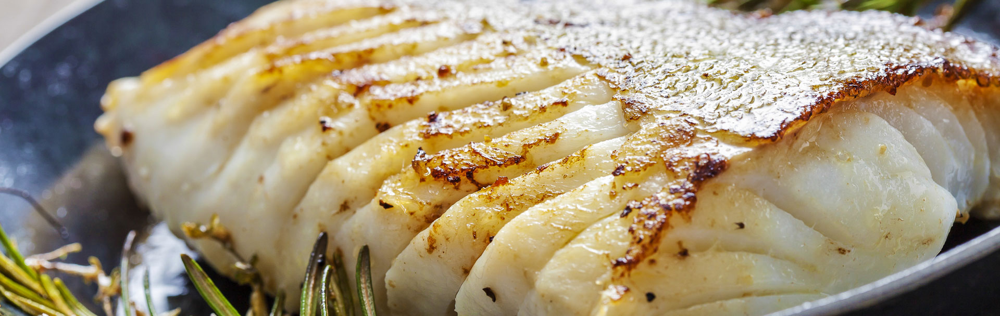

Cooked cod with butter and mustard

Description
A fresh fish meal to go with your freshly made bread and butter.
Ingredients
- 1 kg cod
- Water
- Salt
- Butter
- Mustard greens
Steps
- Clean the cod
- Place a pot of water on the boil and season with salt (as salty as the Barents Sea)
- Put in cod and bring back to a boil
- Remove from heat and let sit for 10 minutes
- Serve with Pan bread, fresh, melted
,butter, and mustard greens.
- Enjoy!